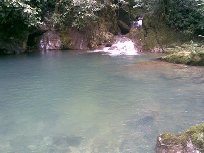
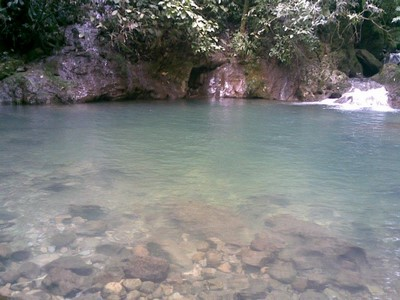
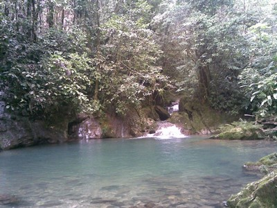
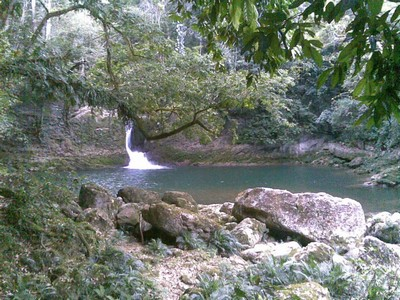
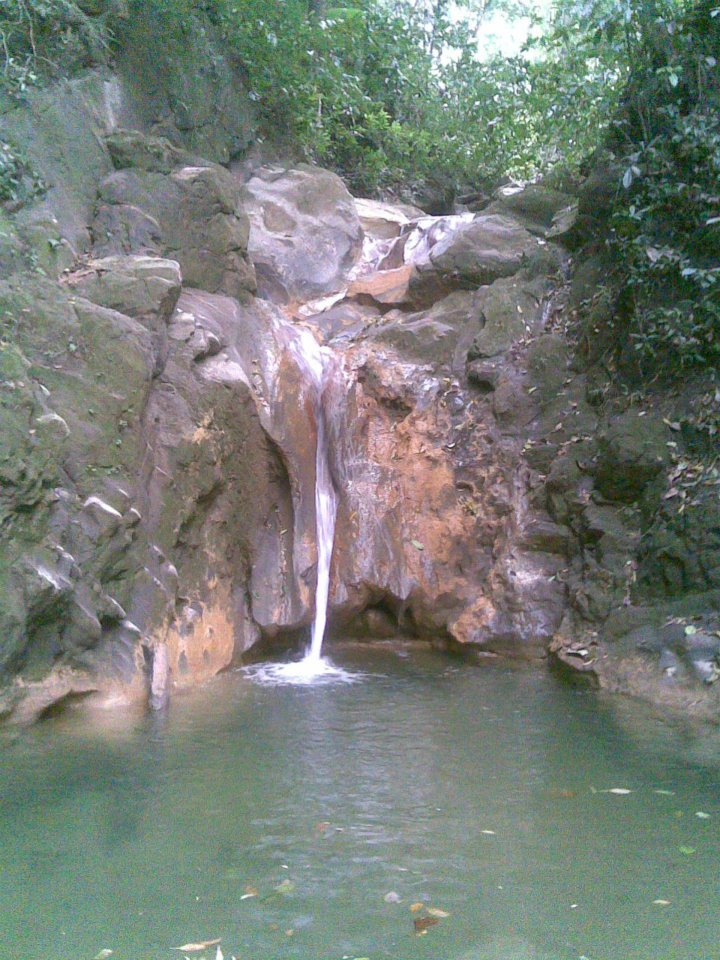

Si te gusta descubrir nuevos lugares, hacer expdiciones, y largas caminatas, conoce Manantial el Ocot.
Ideal para pasar buenas aventuras con los amigos o familiares
Se localiza a 90 km aproximdamente del Municipio de Yajalón del lado Oriente Norte, rumbo a Amado Nervo
Puede irse por la Avenida Loma Bonita, mejor conocido como Libramiento Norte, rumbo a Amado Nervo, de referncia encontrara el Rancho de Don Gamboa, luego pasara el Rancho de Don Eleazar Mazariegos, y después caminara 80 km aproximadamente.
En el lugar usted puede practicar actividades de esparcimientos como:
---Nadar---
---Caminatas/expediciones---
---Fotografía---





Posicione el mouse sobre las imágenes